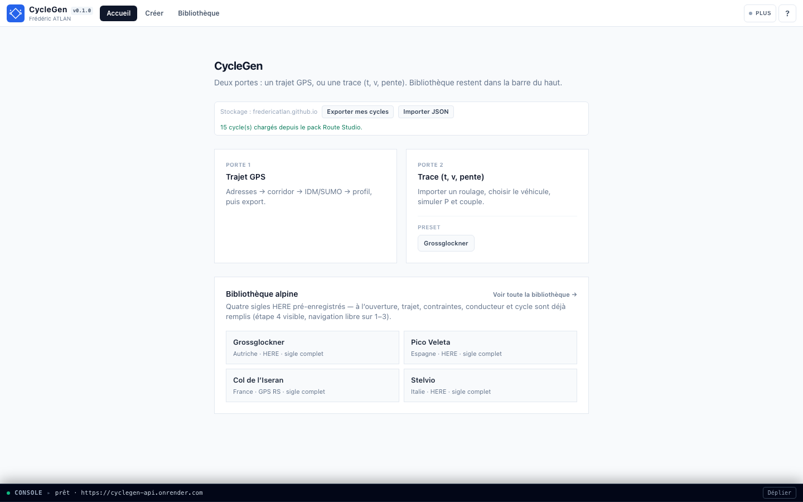
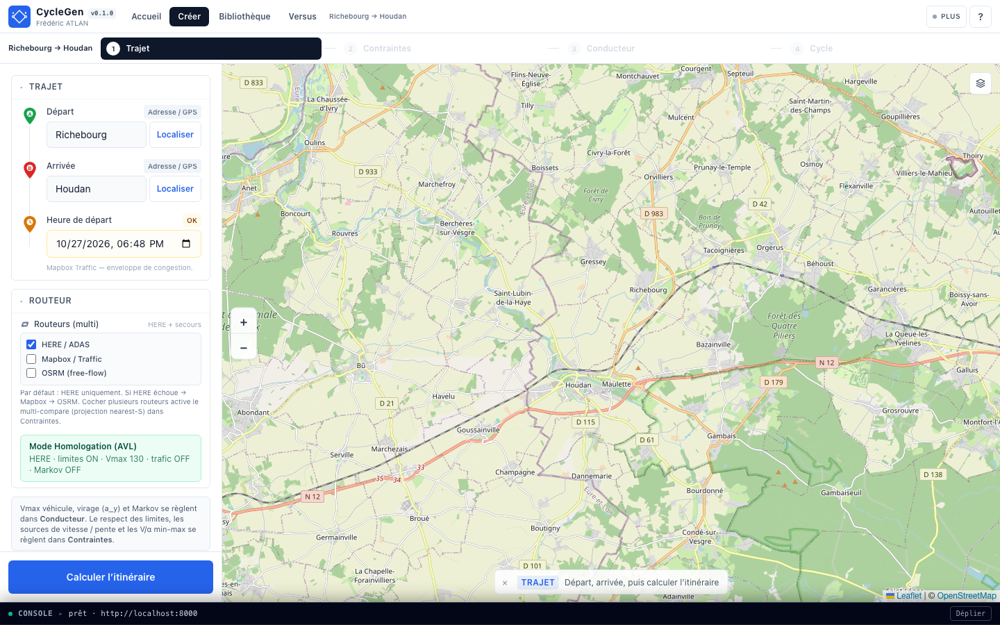
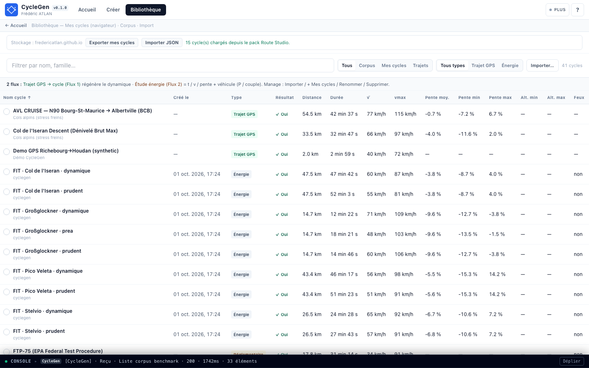
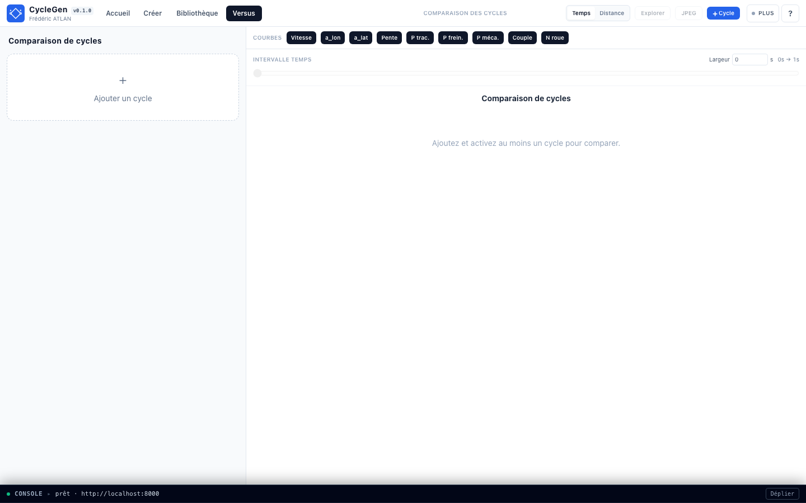

1. Problématique
Les cycles réglementaires (WLTP, NEDC…) sont comparables mais non géographiques. Les enregistrements GNSS / NDS sont réalistes mais coûteux, peu reproductibles et sensibles privacy. Les simulateurs microscopiques (SUMO, etc.) exigent un calibrage lourd.
CycleGen cible un compromis opérationnel : itinéraire réel → enveloppe de contraintes
(limites, trafic, courbes, pente, feux) → cycle synthétique plausible (IDM ± Markov, ou SUMO).
Chaque résultat conserve des métadonnées d’audit (traffic_source, warnings, paramètres conducteur).

2. Comment c’est construit
Découpage volontaire : FastAPI (Python) = vérité scientifique et I/O géospatiales ;
Next.js 16 / React 19 / TypeScript = atelier d’ingénierie (pas de logique IDM ou Markov dans React).
Contrats d’échange en Pydantic (app/models/schemas.py) ;
routers HTTP minces (routes_route, routes_corridor, routes_simulate,
routes_export, routes_calibrate, routes_drivers, routes_benchmark).
Auth optionnelle CYCLEGEN_API_KEY (header / Bearer ; query uniquement sur upgrade WebSocket).
CORS borné via CORS_ORIGINS — jamais * avec credentials.
Géospatial et corridor
Orchestrateur services/routing/multi.py : chaîne primaire séquentielle
HERE ADAS → Mapbox Traffic → OSRM (premier succès = géométrie de référence).
Les routeurs secondaires cochés en UI sont fetchés en parallèle et leurs Vlegal / Z
sont projetés sur l’axe S primaire pour le workspace Contraintes — pas de bascule silencieuse opaque.
Disponibilité runtime : HERE_API_KEY, MAPBOX_ACCESS_TOKEN ; OSRM toujours joignable
(démo publique ou URL self-host).
spatial_processor.py assemble le SpatialCorridor (NumPy + SciPy) :
lissage DEM Savitzky–Golay / fenêtre spatiale ~150 m pour tuer le bruit Mapbox/OSM sur α(s) ;
courbure → Vcurve (curvature.py, freinage latéral admissible) ;
overlay maxspeed OSM ; projection des feux Overpass (dédup ~15 m, caps 500 events / warnings).
Enveloppes résultantes : Vlegal, Vtraffic, Vcurve le long de S.

Solveur, calibration Route Studio, data
-
kinematic_solver.IDMSolver— IDM (δ=4) sans SUMO par défaut ; couplage pente agrade = −g·sin(α) ; lag 1er ordrepedal_tau_s/vdes_tau_s(défaut Pydantic 0 = désactivé) ; profils Eco / Normal / Agressif / Sportif / Prudent / Dynamique ; bruit Markov borné (markov_noise.py, forcé à 0 en freinage dur a ≤ −1 m/s²). -
SUMO/TraCI — pont optionnel (
sumo_bridge.py+ image Docker dédiée) pour scénarios microscopiques ; l’IDM reste le chemin nominal CI / Pages. -
Recalage RS — fingerprint SHA-256 de la source
(
rs_fingerprint.py) → suggestion physique IDM ; fit geometry-lock async (rs_jobs.py: ThreadPoolExecutor, TTL 1 h, file max 8,POST …/jobs+ poll — jamais un POST sync long). -
Corpus —
backend/app/data/benchmark/+manifest.json(id, license, citation,sha256,family) ; alpin : Grossglockner, Col de l’Iseran, Stelvio, Pico Veleta ; seeds réglementaires proxy (WLTC/NEDC) documentés comme non officiels. -
Export — CSV / XML / Excel (
exceljs/xlsxcôté front) ; packroute_studio_fit_pack.jsonpour Versus et réouverture.

Frontend, sync spatiale, livraison
-
UI — Leaflet / react-leaflet (carte), Recharts (v(t), a, pente, énergie),
loupe route 3D (
RoadLoupe3D) synchronisée au curseur ; ledger Zustand 3 strates (config / géométrie / résultats) +hoverIndex/playheadIndexpour lier courbes ↔ marqueur carte ↔ pente. - Persistance locale — bibliothèque cycles + banques conducteur/véhicule (localStorage + Dexie pour road-law) ; pas de corridor passé en URL.
- Cheap vs expensive — retouche IDM / véhicule → re-sim debounce 50–100 ms ; rebuild corridor (HERE/OSRM/Mapbox, DEM, feux) = action utilisateur explicite.
-
Pages —
output: "export",basePath=/CycleGen,NEXT_PUBLIC_API_MODE=direct(pas de BFF obligatoire) ; workflow Actions → artifact ; API Docker$PORT(Render/Railway). -
Qualité —
unittestbackend,tsc --noEmit, e2e Playwright (smoke,studio-shell, campagnes usage) ; captures de cet article elles-mêmes générées via Playwright.

3. Valeur ajoutée
- Réduction du coût de donnée — cycles A→B sans campagne de mesure pour chaque étude
- Traçabilité — sources routeur, warnings, paramètres conducteur/véhicule exportables
- Réutilisabilité — export vers chaînes d’outils d’ingénierie ; corpus alpin partagé
- Industrialisation — même logique que le digital engineering auto : standards, seed, CI, déploiement découplé front/API
4. Limites (explicites)
CycleGen n’est pas une vérité terrain NDS, ni une homologation WLTP/NEDC officielle, ni un jumeau de contrôleur de feux réel. Les seeds et TPM sont des proxies d’ingénierie documentés — à remplacer par des données autorisées en usage critique.